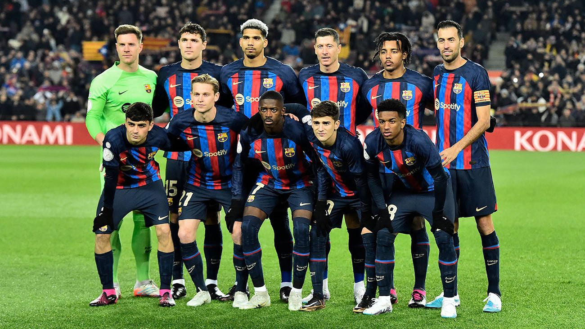

For this project, I utilized the YouTube API to examine the YouTube channels of the Top Ten Most Valuable Football Clubs as ranked by Forbes (2022). Furthermore, I conducted a more in-depth analysis of the best-performing club's YouTube channel to gain insights from their success story.


Performed Exploratory Data Analysis (EDA) on a dataset to analyze the changes in global surface temperature across all countries from 1970 to 2021.
Welcome to my Tableau dashboards, where i design, explore and make sense of complex datasets. As someone who is passionate about data analysis and visualization, I've created these interactive visualizations to help gain valuable insights.

This contains all code or documents related to my SQL projects.

This contains projects completed using Microsoft Power BI.